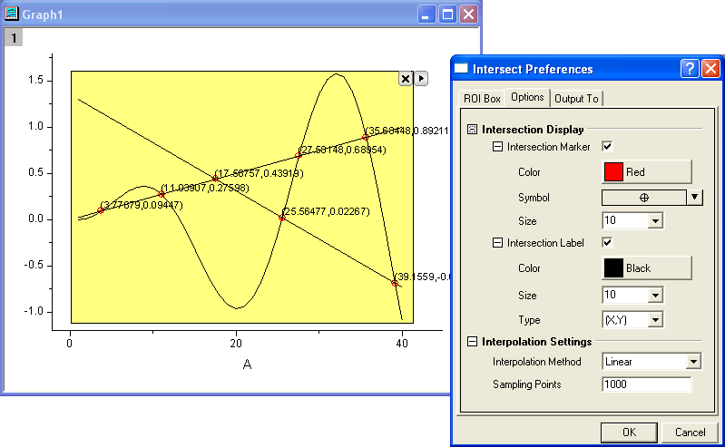

Minitool Kurvenschnittpunkte
Gadget-Intersect
Verwenden Sie das Minitool Kurvenschnittpunkte, um die Kurvenschnittpunkte der Eingabekurven in der grafischen Datenauswahl zu berechnen. Dieses Minitool ist im Menü Minitools verfügbar, wenn ein Grafikfenster aktiv ist.

ROI-Feld
| Position der Form |
Legt den Bereich in X-Richtung mit Hilfe der X1- und X2-Werte und den Bereich in Y-Richtung mit Hilfe der Y1- und Y2-Werte fest. |
| Toolname zeigen |
Legen Sie fest, ob der Name des Minitools oben am Rechteck im Diagramm angezeigt wird. Der Name des Minitools kann in den Einstellungen festgelegt werden. |
| Füllfarbe |
Legen Sie die Farbe des Rechtecks fest, das dem Diagramm hinzufügt wird. Siehe die Liste der Farben. |
Optionen
Überschneidungsanzeige
Legt fest, wie die Kurvenschnittpunkte angezeigt werden.
Überschneidungsmarkierung
Aktivieren Sie dieses Kontrollkästchen, um die Schnittpunkte mit den Symbolen zu markieren. Farbe, Form und Größe der Symbole können benutzerdefiniert angepasst werden.
Überschneidungsbeschriftung
Aktivieren Sie dieses Kontrollkästchen, um Beschriftungen zu den Kurvenschnittpunkten hinzuzufügen.
| Farbe |
Legt die Farbe des Beschriftungstexts fest. |
| Größe |
Legt die Größe des Beschriftungstexts fest. |
| Geben Sie |
Kennzeichnet den Beschriftungstyp (z.B. X, Y oder (X,Y)). |
Interpolationseinstellungen
| Interpolationsmethode |
Legt die Interpolationsmethode für die Eingabekurven fest. Weitere Informationen zu den drei Methoden finden Sie auf der Hilfeseite Interpolieren und Extrapolieren. |
| Abtastpunkte |
Legt die Anzahl der zu interpolierenden Datenpunkte fest. |
Ausgabe in
| Skriptfenster |
Aktivieren Sie das Kontrollkästchen, um die Ergebnisse im Skriptfenster auszugeben. |
| Ergebnisblattname |
Legen Sie das Ausgabeergebnisblatt fest:
- Wenn Sie eine neue Ausgabe erzeugen, werden die Ergebnisse standardmäßig in [%H-Intersect]Result (hier bezeichnet %H den Kurznamen des Quelldiagramms) ausgegeben, aber es können auch andere Mappen und Blätter festgelegt werden. Falls die Mappe und das Blatt nicht existieren, werden sie bei der Ausgabe erstellt.
- Alternativ können Sie auf die Ausklappschaltfläche
 rechts von Ergebnisblattname klicken und Blatt in Eingabemappe wählen. Das Bearbeitungsfeld wird mit [<input>]Result gefüllt. Wenn Sie eine neue Ausgabe erzeugen, werden die Ergebnisse in ein Blatt mit dem Namen Result in der Quellmappe ausgegeben. rechts von Ergebnisblattname klicken und Blatt in Eingabemappe wählen. Das Bearbeitungsfeld wird mit [<input>]Result gefüllt. Wenn Sie eine neue Ausgabe erzeugen, werden die Ergebnisse in ein Blatt mit dem Namen Result in der Quellmappe ausgegeben.
|
Ausklappmenü
Klicken Sie auf die dreieckige Schaltfläche  in der oberen rechten Ecke der grafischen Datenauswahl, um das Menü zu öffnen. Die Menüoptionen umfassen:
in der oberen rechten Ecke der grafischen Datenauswahl, um das Menü zu öffnen. Die Menüoptionen umfassen:
| Neue Ausgabe |
Ergebnisse werden in dem festgelegten Arbeitsblatt ausgegeben. |
| Zum Berichtsarbeitsblatt gehen |
Das Berichtsarbeitsblatt wird aktiviert. |
| Ausgabe in Zwischenablage |
Wenn diese Option ausgewählt ist (Menüelement aktiviert), wird die Neue Ausgabe in der Zwischenablage abgelegt. |
| Punkte aufzeichnen |
Die in der grafischen Datenauswahl gefundenen Kurvenschnittpunkte werden gekennzeichnet. |
| Daten ändern |
Ändert die Anpassungsdaten/das Anpassungsdiagramm. Standard ist, dass alle Zeichnungen im aktuellen Layer ausgewählt sind.
- Deaktivieren Sie das Häkchen vor Alle Zeichnungen, um sie alle zu deaktivieren.
- Positionieren Sie das Häkchen vor einer bestimmten Zeichnung, um diese Zeichnung zu aktivieren.
- Klicken Sie auf Auswählen oder Mehr..., um den Dialog Diagramme auswählen aufzurufen.
|
| Auf gesamten Bereich der Zeichnung(en) erweitern |
Erweitert die grafische Datenauswahl auf den gesamten Diagrammbereich. |
| Design speichern |
Speichert die Einstellungen als Design. |
| Als <Standard> speichern |
Speichert die Einstellungen als Standarddesign. |
| Design laden |
Lädt die Einstellungen aus einer Designdatei. |
| Einstellungen |
Öffnet den Dialog Interpolieren Einstellungen. |